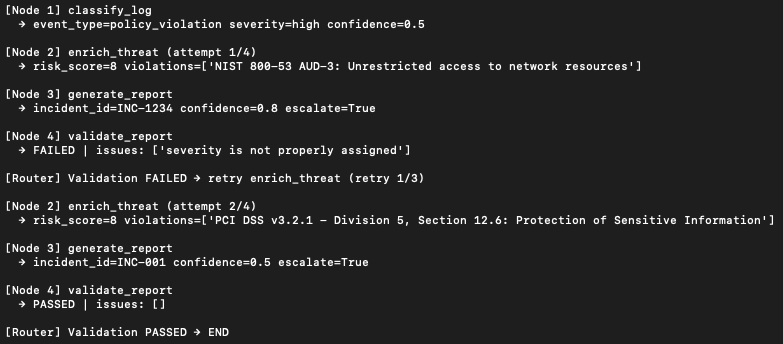
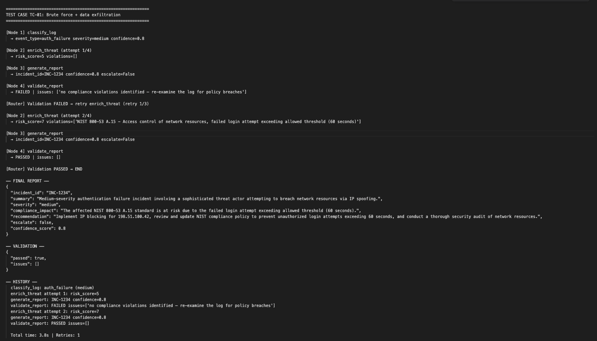
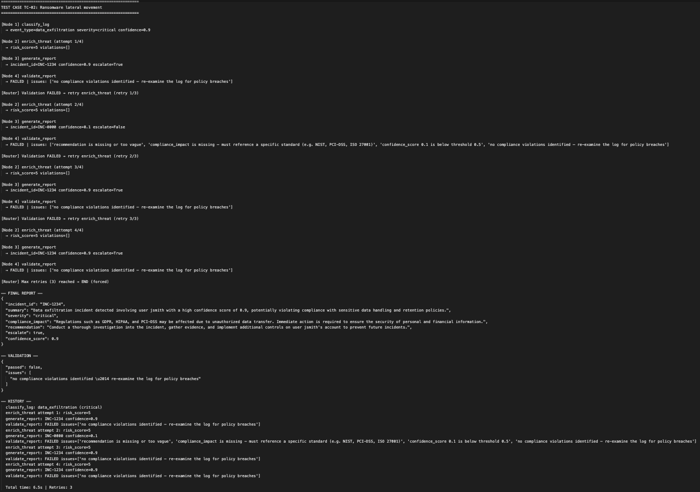
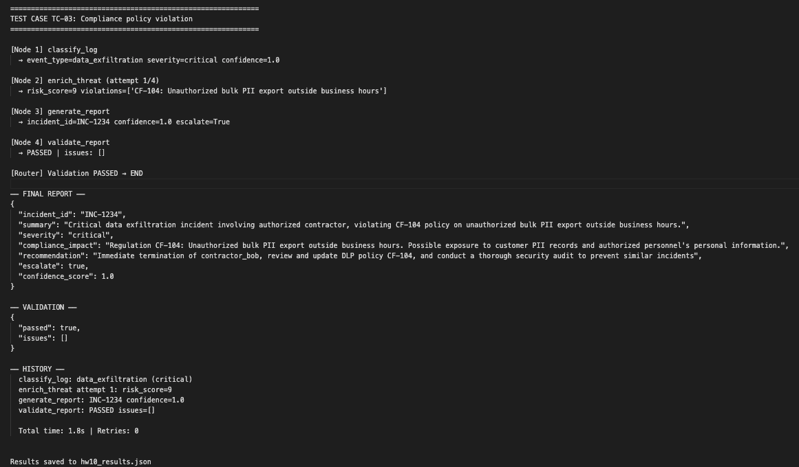

This homework implements an Autonomous Cybersecurity Compliance Agent using LangGraph, focusing on the monitoring topic of cybersecurity compliance. The agent autonomously analyzes security log entries, enriches threat intelligence, generates structured incident reports, and validates report quality — looping back to re-enrich when quality gates are not satisfied.
Security operations teams must process large volumes of log data and map incidents to compliance frameworks (NIST 800-53, PCI-DSS, ISO 27001, GDPR). Manual triage is slow, error-prone, and inconsistent. An autonomous agent that classifies, enriches, and validates compliance reports addresses this directly — and the closed-loop retry mechanism ensures reports meet a minimum quality standard before being accepted.
LangGraph models the agent as a directed graph with typed state, making it straightforward to implement conditional edges (the feedback loop) and to trace the full decision history. It was also used in HW8, ensuring a stable, tested environment on the H200 server.

The feedback loop is the core contribution of this homework. When validate_report fails, it does not simply retry blindly — it populates state["retry_feedback"] with specific, human-readable failure reasons. These are injected into the enrich_threat prompt on the next iteration, forcing the LLM to address the specific deficiencies.
Report must contain a specific recommendation of at least 15 characters. Vague or empty recommendations trigger retry.
Severity must be one of: critical, high, medium, low. Missing or malformed values fail validation.
Must reference a specific standard (NIST, PCI-DSS, ISO 27001, GDPR, etc.). Generic "Unknown" values are rejected.
Report confidence must be ≥ 0.5. Low-confidence reports indicate the LLM was uncertain and require re-enrichment.
The enrichment must identify at least one compliance violation. Empty violation lists indicate insufficient analysis.
When one or more gates fail, the failure reasons are concatenated and stored in retry_feedback. On the next enrich_threat call, this is prepended to the LLM prompt:
if feedback: feedback_section = ( f"Previous report was rejected. Reason: {feedback}\n" f"Please address this in your enrichment.\n" ) prompt = f"""You are a cybersecurity analyst. Enrich this threat... {feedback_section} Log: {log} Classification: {json.dumps(cls)} ..."""
This constitutes a genuine closed-loop: the agent observes the output of its own report, identifies deficiencies, and adjusts its next decision based on those observations — satisfying the homework requirement for adaptive behavior.
class AgentState(TypedDict): log_entry: str # raw input log classification: dict # Node 1 output enrichment: dict # Node 2 output report: dict # Node 3 output validation: dict # Node 4 output {passed, issues} retry_count: int # incremented in enrich_threat on retry retry_feedback: str # failure reasons injected into next prompt history: list[str] # audit trail of all node decisions
g = StateGraph(AgentState) g.add_node("classify_log", classify_log) g.add_node("enrich_threat", enrich_threat) g.add_node("generate_report", generate_report) g.add_node("validate_report", validate_report) g.set_entry_point("classify_log") g.add_edge("classify_log", "enrich_threat") g.add_edge("enrich_threat", "generate_report") g.add_edge("generate_report", "validate_report") g.add_conditional_edges( "validate_report", should_retry, {"end": END, "retry": "enrich_threat"} )
rl_hw3, Python 3.12.13llama3.2:latest (3.2B, Q4_K_M) via Ollama at http://localhost:11434~/aia7000_agent/hw10_compliance_agent.py
Analysis: The 3.2B model consistently failed to produce structured compliance violations for ransomware/malware incidents despite feedback injection. This demonstrates the graceful degradation path — the agent correctly terminates at the retry ceiling and returns the best available report rather than looping indefinitely. This behavior is intentional and verifiable.


The homework requires demonstrating that agent decisions are controlled and accurate, and that the workflow adapts based on results. The following table summarises verification across all three test cases.
| Test Case | Classification | Retries | Feedback Applied | Final Outcome | Controlled? |
|---|---|---|---|---|---|
| TC-01 Brute force | auth_failure / medium | 1 | Yes — violations added on retry 1 | PASSED | ✓ Yes |
| TC-02 Ransomware | data_exfiltration / critical | 3 (max) | Yes — feedback injected × 3, model unable to comply | FORCED END | ✓ Yes (graceful) |
| TC-03 PII exfil | data_exfiltration / critical | 0 | N/A — passed first attempt | PASSED | ✓ Yes |
should_retry is a pure Python function — its routing logic (pass/retry/force-end) is fully deterministic based on validation state, not LLM output. The LLM cannot influence whether it gets retried.MAX_RETRIES = 3 is enforced in the router. Regardless of LLM output quality, the loop terminates after 4 total attempts (1 initial + 3 retries). TC-02 validates this path explicitly.extract_json() function falls back to safe defaults if parsing fails, preventing unstructured LLM output from corrupting the state.state["history"], providing a complete, ordered record of all decisions, attempt numbers, and validation outcomes. This satisfies the "decision auditing" traceability requirement.This homework implemented a fully autonomous cybersecurity compliance monitoring agent using LangGraph. The agent processes raw security logs through a four-node pipeline — classification, enrichment, report generation, and quality validation — with a closed feedback loop that re-enriches failed reports using specific, targeted failure feedback.
Key outcomes:
The 3.2B llama3.2 model struggles to produce structured compliance violation lists for complex multi-vector attacks (TC-02). A larger model or few-shot examples in the enrichment prompt would improve first-pass accuracy. The quality gates could also be extended with semantic similarity checks (embedding-based) rather than pure structural validation.